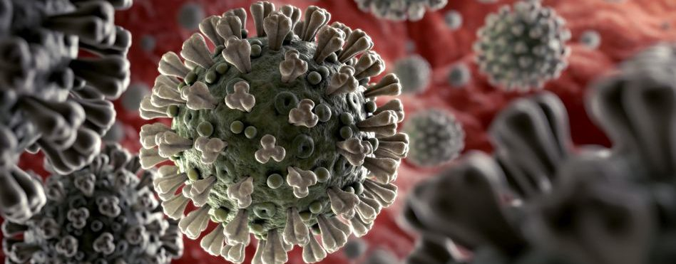
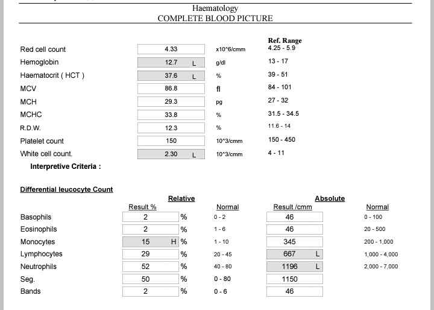

اليوم بإذن الله سنتعرف علي ما يأتي:
أعراض الكورونا
ما الإجرائات التي يجب إتخاذها عند ظهور أي من الأعراض السابقة
ما العلاج الذي يجب أخذه عند التاكد من الإصابة

أولاً : أعراض الكورونا
أعراض الكورونا تختلف من شخص إلي أخر فمن الممكن أن تكون:
حمّى
سعال جاف
إرهاق
آلام وأوجاع
التهاب الحلق
إسهال
التهاب الملتحمة
صداع
فقدان حاسة التذوق أو الشم
طفح جلدي، أو تغير في لون أصابع اليدين أو أصابع القدمين
الأعراض الخطيرة:
- صعوبة أو ضيق في التنفس
- ألم أو ضغط في الصدر
- فقدان القدرة على الكلام أو الحركة
ملحوظة هامة:
من الممكن أن تأتي لك بدون أي عرض من الأعراض السابقة بل ب أعراض أخري لذا يجب عليك معرفة أن أي شيئ غريب يحصل لجسمك من الممكن أن يكون كورونا و أيضاً يستغرق ظهور الأعراض في المتوسط 5-6 أيام منذ إصابة الشخص بالفيروس، ولكن قد يستغرق ظهور الأعراض حتى 14 يومًا.
ثانياً : ما الإجرائات التي يجب إتخاذها عند ظهور أي من الاعراض السابقة
عند ظهور أي عرض من الاعراض السابقة يجب عليك عمل هذه التحاليل:
- SGOT(AST)
- SGPT(ALT)
- Lactate Dehydrogenase(LDH)
- D-dimer
- COMPLETE BLOOD PICTURE
- C-Reactive Protein-CRB(Quant.)
إذا كانت هذه التحاليل ليست في معادلاتها الطبيعية يجب زيارة الطبيب علي الفور ف الان ما هي المعادلات الطبيعية لكل من التحاليل السابقة؟؟
النسبة الطبيعية للتحاليل السابقة لدي البالغيين
- SGOT(AST)=0-50U/L
- SGPT(ALT)=0-41U/L
- Lactate Dehydrogenase(LDH)=240-480 Unit
- D-dimer=Negative<200 OR Positive>200<200
- C-Reactive Protein-CRB(Quant.)=0-4mg/l
- 
أما ب النسبة الCOMPLETE BLOOD PICTURE فكما نرأ في الصورة السابقة الجزء العلوي هناك كلمة Ref.range فهذا يعني المعدل الطبيعي و في الجزء الاسفل من الصورة هناك كلمة Normal فهذا يعني أيضا المعدل الطبيعي.
ملحوظة هامة :
لا داعي عمل تحاليل للصغار بل من الافضل المتابعة مع دكتور أطفال و أيضاً عند ظهور أي من الأعراض السابقة يجب عمل أشعة مقطعية علي الصدر و إذا تم إثبات إصابتك ب الڨيروس ف يجب إتباع الخطوات الأتية:-
- عزل النفس بالمنزل.
- إذا كان هناك أحد يعيش معك في نفس البيت ف يجب تخصيص حجرة و حمام خاص بك فقط.
- عند التعامل مع الشخص الذي يعيش معك يجب إرتداء الكمامة و قفاز و المحافظة علي مسافة اثنين متر أو أكثر.
ثالثاً :ما العلاج الذي يجب أخذه عند التاكد من الإصابة
عند التاكد من الإصابة يجب المتابعة مع طبيب لتعلمه بجميع أحوالك الصحية ليعطيك العلاج المناسب حتي لا يؤثر علي أي شيئ لديك و لكن الذي لا يختلف عليه الاطباء هو الڨيتامينات لان السلاح لمواجهة هذا الڨيروس هو المناعة و يتعرض معظم مصابي كورونا للإكتاب لذا يجب محاولة التواصل معهم عبر الإنترنت لإن يوجد البعض منهم فاقد للأمل و هذا يعرضه للإكتاب فيجب علينا أن نساعده بإنه لا يوجد شيئ لإن الإكتاب يضعف المناعة و كما قلنا سابقاً إن المناعة هي السلاح لمواجهة هذا الڨيروس و يجب أيضاً التغذية الجيدة للمصاب